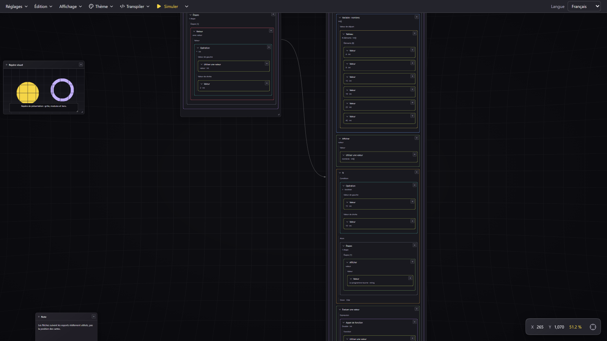

Application desktop Windows · 0.1.0-alpha.1
Des blocs qui sont de vrai code, pas des dessins qui y ressemblent
Sapphire 3 est un environnement de programmation visuelle. Chaque carte posée sur le canvas est une construction du langage : une fonction, une variable typée, une boucle, un appel. Elles forment un arbre syntaxique indépendant du langage cible, qu'un moteur analyse, type et vérifie avant toute génération. Le texte n'a jamais été supprimé : il a seulement cessé d'être le point de départ.
- React 19
- Vite 8
- JavaScript / JSX
- CSS natif
- Neutralinojs
- pnpm
- AST indépendant des cibles
- Typage statique strict
Ce qui fonctionne aujourd'hui
Canvas navigable avec zoom et repères, cartes Module, notes et images, fonctions et types déclarés à
la racine d'un module, blocs conditionnels et boucles, affectations, appels, tableaux, typage statique,
références intermodules avec flèches courbes, simulation locale pas à pas, graphe de contrôle,
dépendances, transpilation JavaScript et Python, six thèmes, interface anglais et français,
import/export .sp3 et JSON.
Ce qui ne l'est pas encore
Aucune exécution automatique : la simulation est lancée par une action explicite. La sauvegarde automatique réécrit le fichier .sp3 courant après chaque modification (retard de 500 ms). Les cibles C/C++/Java sont présentes mais désactivées. Le modèle objet n'est pas décidé. Les vues d'exécution graphiques sont annoncées comme « à venir » dans l'interface.
Un document, pas une maquette
Les captures de ce site proviennent de l'application réelle, pilotée par ses propres dialogues, sans montage. Le projet illustré a été construit bloc par bloc dans l'interface, puis simulé.

- Deux cartes Module : Calculs publie une fonction, Affichage l'importe et l'appelle. Une carte porte la hiérarchie des blocs, l'autre ses propres étapes.
- La flèche courbe va du module exportateur vers le module récepteur. Elle n'apparaît que si une exportation est réellement utilisée : déplacer une carte ne crée ni ne supprime aucune dépendance.
- Le statut en bas à gauche rappelle la zoom courant et l'état d'analyse du document : nombre de modules, de nœuds et de diagnostics.
Comment le projet est conduit
Le développement avance par incréments volontairement petits : une capacité visuelle, puis son modèle de données, puis son moteur, puis ses validations. Une direction de conception n'est jamais implémentée sans être demandée, et une fonctionnalité n'est annoncée que si elle est réellement opérationnelle dans la fenêtre de l'application.
Le code est écrit avec des assistants. Sapphire 3 est un projet conduit en dialogue avec des outils d'assistance au développement (OpenCode, DeepSeek V3.2, ChatGPT Sol 6.1, GLM 3.2, Nemotron de NVIDIA) : c'est un mode de fabrication assumé, pas un détail caché. Ce qui l'encadre : chaque incrément est relu, testé (223 tests du moteur logique, runner Node natif, sans dépendance de test) et validé dans l'interface avant d'être retenu. Le vocabulaire, les contrats et les limites sont décidés par le projet, pas par le générateur.
Cette documentation évolue avec le projet. Elle décrit l'état atteint, pas un plan. Les pages sont produites en même temps que les fonctionnalités : une capacité ajoutée ailleurs se traduit ici par une nouvelle capture et une nouvelle section, et une capacité non encore livrée y est explicitement marquée comme absente.
Technologies
| Rôle | Choix | Remarque |
|---|---|---|
| Interface | React 19.3.1, composants fonctionnels JSX | Canvas plein écran, panneaux flottants déplacables, aucune bibliothèque d'interface tierce |
| Build | Vite 8.3.5 | Serveur de développement local, compilation du frontend pour la distribution |
| Desktop | Neutralinojs 6.10.0 (neu 11.8.0) | Fenêtre native, dialogues de fichiers, accès disque ; aucun backend, aucun service distant à l'exécution |
| Style | CSS natif + jetons dans src/styles/tokens.css | Six thèmes, variables sémantiques, pas de charge distant de police ou de feuille de style |
| Icônes | lucide-react ^1.64.0 | Utilisés comme glyphes décoratifs, toujours accompagnés d'un libellé ou d'aria-label |
| Moteur logique | JavaScript pur dans src/utils/logic/ | Sans React, sans DOM, sans API native ; source JSON versionnée, importable et testable seul |
| Tests | node --test | 223 tests : scénarios valides, invalides, incomplets, localisations, non-mutation, conservation JSON |
| Documentation AST | LaTeX → PDF | abstract/ARCHITECTURE_AST.tex et son PDF, compilés par pnpm docs:ast |
Dépôt du projet : github.com/lalBi94/Sapphire3 — sources, historique et issues de Sapphire 3. Le présent site n'est qu'un support de présentation : il ne contient aucun code de l'application et n'en est pas une copie fonctionnelle.
Trois lectures possibles
Documentation visuelle
Vingt sections, quarante-deux captures réelles annotées : créer un module, construire une expression, déclarer un export, importer une fonction, lire une flèche de dépendance, simuler, déboguer pas à pas, transpiler, changer de thème et de langue.
Le modèle AST
Ce que le moteur stocke vraiment : la source JSON v1, les trois relations indépendantes, les vingt-six constructions et leurs slots, le typage strict, les portées, les diagnostics, puis la route vers l'analyse, la simulation et la transpilation.
Architecture AST (PDF)
Le document de référence, rédigé en LaTeX : objectif et périmètre, concepts et relations, flux et responsabilités, structures et invariants, un exemple à deux modules, validations et limites connues.